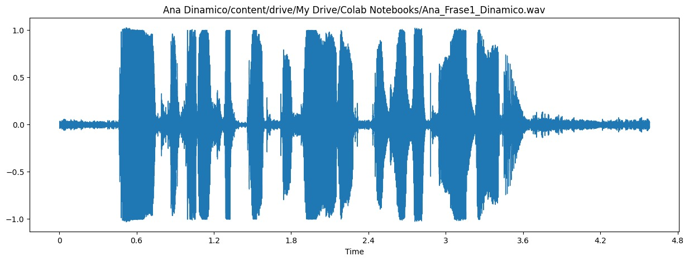

1. Gravações (com transcrição) do Nome e RA de cada integrante do grupo.
Ana Paula Sales de Araújo - RA: 11201811703
Luisa Pataquini Macchia - RA: 110201920163
Randre Cardoso - RA: 11201721482
Ana Paula Sales de Araújo - RA: 11201811703
Luisa Pataquini Macchia- RA: 110201920163
Randre Cardoso - RA: 11201721482
2. Gravação com o falante alternado.
i. Apresente uma forma de onda e o espectrograma de toda a “frase1”, para um dos
microfones e um dos falantes. Analise as diferenças entre os microfones nas
gravações mono da frase.
Áudios utilizados, falante Ana Paula Sales:
Abaixo, as imagens apresentando a forma de onda e o espectrograma de toda a frase1, nos dois microfones:
- Microfone Capacitivo:
- Imagens obtidas utilizando o notebook python:
- Microfone Dinâmico:
- Imagens obtidas utilizando o notebook python:
O espectrograma de um áudio gravado com um microfone dinâmico é mais limpo e menos complexo, pois a sensibilidade seletiva a frequências e o design resistente do microfone minimizam a captação de ruídos externos e interferências. Analisando o formato de onda e o espectro obtido para o microfone dinâmico, vemos que o resultado está de acordo com o esperado, uma vez que a forma de onda obtida é bem mais simples se comparada a forma de onda obtida com o microfone capacitivo.
O espectrograma de um áudio gravado com um microfone capacitivo é mais complexo e "poluído" devido à maior sensibilidade a sons de fundo e à captação de uma ampla faixa de frequências. Ruídos externos, como vento, ruídos de fundo ou interferências elétricas, podem ser mais proeminentes na gravação.
ii. Busque na web a "frase1" no início da música "Vambora" da Adriana Calcanhoto. Faça o espectrograma do mesmo trecho dela e compare com uma gravação de vocês.
Áudio utilizado (gravado no microfone dinâmico), falante Luisa Pataquini e Frase1 na música da Adriana Calcanhotto:
Imagens obtidas a partir do notebook python, para o áudio da Luisa:

Imagens obtidas a partir do notebook python, para o áudio extraído da música da Adriana:

Comparando as duas formas de onda, é possível observar que para a forma de onda gerada a partir do áudio extraído música da Adriana, a onda apresenta mais picos do que a forma de onda gerada pelo áudio gravado pelo grupo. Isso era esperado, uma vez que apesar do barulho externo ter interferido no áudio gravado pelo grupo, o áudio extraído da música tem a presença de diversos instrumentos musicais, uma vez que não foi possível encontrar a versão acapella. Sabemos que os instrumentos musicais podem atingir frequências diferentes da voz humana, portanto, faz sentido que o espectro de onda para a música tenha apresentado tantas variações de frequência.
No áudio extraído da música, a presença de vários instrumentos musicais contribui para uma ampla gama de frequências sonoras. Cada instrumento tem sua própria assinatura sonora, gerando harmônicos e nuances de áudio em várias frequências. Isso resulta em uma forma de onda mais rica e complexa, com numerosos picos representando diferentes frequências e instrumentos presentes na música. A sobreposição dessas várias fontes sonoras cria uma forma de onda densa e cheia de detalhes.
Por outro lado, no áudio gravado em uma sala de aula com ruído ambiente, embora haja ruído de fundo, a fonte sonora principal é a voz humana. A voz humana tende a se concentrar em faixas de frequência específicas, geralmente nas frequências da fala. Isso resulta em uma forma de onda menos complexa, com menos picos visíveis, porque as fontes sonoras não são tão variadas em termos de frequências como no caso da música.
Portanto, a diferença na forma de onda reflete a complexidade e a diversidade das fontes sonoras presentes em cada cenário. A música com instrumentos cria uma forma de onda mais rica e cheia de picos devido à variedade de frequências das fontes, enquanto o áudio da sala de aula, focado principalmente na voz humana, produz uma forma de onda mais simples com menos picos distintos.
Áudio da Música: No espectrograma da música, é possível identificar uma representação visual das frequências ao longo do tempo. Cada instrumento na música é representado por bandas de frequência distintas que variam conforme os instrumentos entram e saem da música. Nota-se a presença de padrões variados, indicando a existência de múltiplas fontes sonoras em diferentes frequências.
Áudio da Voz com Ruído de Fundo: No espectrograma do áudio gravado em sala de aula, a representação é mais simples em comparação com a música. A voz humana está concentrada em um intervalo específico de frequências, geralmente na faixa de frequência das vocalizações humanas. O ruído de fundo também é visível, mas tem menos variação e é menos complexo do que a mistura de frequências observada na música.
iii. Apresente uma forma de onda e o espectrograma de todo “verso1”, para o outro microfone e outro falante diferente do item anterior. Analise as diferenças entre os microfones nas gravações mono deste verso.
Áudios utilizados, falante Randre Cardoso:
Abaixo, as imagens apresentando a forma de onda e o espectrograma de toda o verso, nos dois microfones:
- Microfone Capacitivo:
- Imagens obtidas utilizando o notebook python:
- Microfone Dinâmico:
- Imagens obtidas utilizando o notebook python:

Como mencionado no item 2.1, o espectrograma de um áudio gravado com um microfone dinâmico tende a ser mais limpo e menos complexo, com menos interferências visuais. A diferença entre o espectrograma de um áudio gravado com um microfone dinâmico e um microfone capacitivo é notável. O microfone dinâmico é conhecido por sua resistência e capacidade de lidar com níveis elevados de pressão sonora, tornando-o menos sensível a ruídos externos. Isso o torna ideal para ambientes barulhentos ou gravações de fontes sonoras intensas, como instrumentos musicais.
Por outro lado, o microfone capacitivo é mais sensível e capta uma ampla gama de frequências, tornando-o ideal para gravações de alta qualidade. No entanto, sua alta sensibilidade o torna mais suscetível a ruídos ambientais e interferências. Isso se reflete em um espectrograma mais complexo e "poluído", com formas de onda que mostram uma maior variedade de frequências e uma maior presença de ruídos de fundo. Essas diferenças no espectrograma estão diretamente relacionadas às características distintas de captação e sensibilidade de cada tipo de microfone.
iv. Apresente as gravações e os espectrogramas da “Música1” - Cuidado pois são estéreo.
Gravações:
- As imagens foram obtidas utilizando o notebook python.
- Gravação feita com o coro utilizando o microfone capacitivo:
- Gravação feita com o coro utilizando o microfone dinâmico:
- Gravação estéreo - 2 microfones dinâmicos:
3. Em face das gravações efetuadas, como vocês definem o conceito de Prosódia? Qual a diferença entre voz falada normal, em verso, ou em música neste conceito?
A prosódia é o estudo dos aspectos rítmicos, melódicos e entoacionais da linguagem falada ou cantada. Esse
conceito engloba vários elementos, como o ritmo, a entonação, a ênfase, a duração das sílabas e a modulação
da voz. A prosódia desempenha um papel fundamental na comunicação, pois ajuda a transmitir nuances de
significado, emoção e intenção na fala e na música. A diferença entre a voz falada normal, a voz em verso e
a voz em música está nos contextos em que essas formas de prosódia são aplicadas e nas características
específicas associadas a cada uma delas.
Voz Falada Normal:
Na voz falada normal, a prosódia desempenha um papel essencial na comunicação oral cotidiana. Inclui
elementos como a entonação, que indica se uma frase é uma pergunta, uma afirmação ou uma exclamação, e o
ritmo, que ajuda a manter o discurso compreensível. A ênfase em certas palavras ou sílabas pode destacar
informações importantes e expressar emoção.
Voz em Verso:
Na poesia, a prosódia é igualmente importante. A métrica, que se refere ao padrão rítmico de acentuação das
sílabas em um verso, é uma característica. Algumas formas poéticas, como o soneto, têm métricas específicas
que os escritores devem seguir. Além disso, a escolha de palavras e a entonação podem ser altamente
estilizadas para criar efeitos poéticos.
Voz em Música:
Esse conceito na música se refere à como as palavras são cantadas em uma melodia. A entonação, o ritmo e a
modulação da voz são fundamentais na música, especialmente nas canções. A melodia e a harmonia da música
também desempenham um papel na expressão emocional. As letras de uma música podem ser enfatizadas ou
modificadas de acordo com a melodia.
Portanto, a prosódia é essencial da comunicação, seja na fala normal, na poesia ou na música. Cada contexto
tem suas próprias características específicas,mas a entonação, o ritmo e outros elementos prosódicos afetam
a interpretação e a expressão da linguagem e da música.
Através desse laboratório observamos a modulação da voz, a entonação, ritmo e duração da sílaba. É nítido
como cada um desses aspectos da prosódia se adequa a diferentes formas de comunicação, como na transcrição
do RA, no poema e na música.
4. Complementar segundo as orientações da parte do relatório indicadas no notebook fornecido.
Link para o notebook google collab: https://colab.research.google.com/drive/1NRYQUZzS3uPxPlhApCnR1IGx6CWAJBf7?usp=sharing
Referências
[1] McLOUGUHLIN, I., “Applied Speech and Audio Processing: with MATLAB Examples”,
Cambridge, 2009, Capítulo 5 “Speech Communications”.
[2] MINAMI, M., Capítulo 4 – Aparelho Fonador Humano e Processamento Digital de Voz,
UFABC 2018.
[3] TODA MATÉRIA. Prosódia. Disponível em: https://www.todamateria.com.br/prosodia/. Acesso em: 29/10/2023.